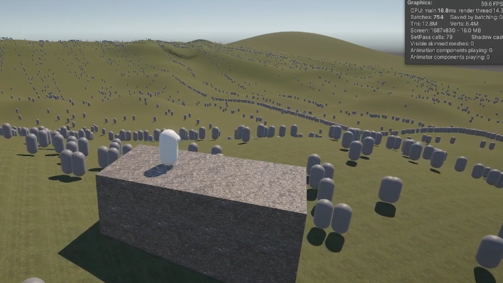
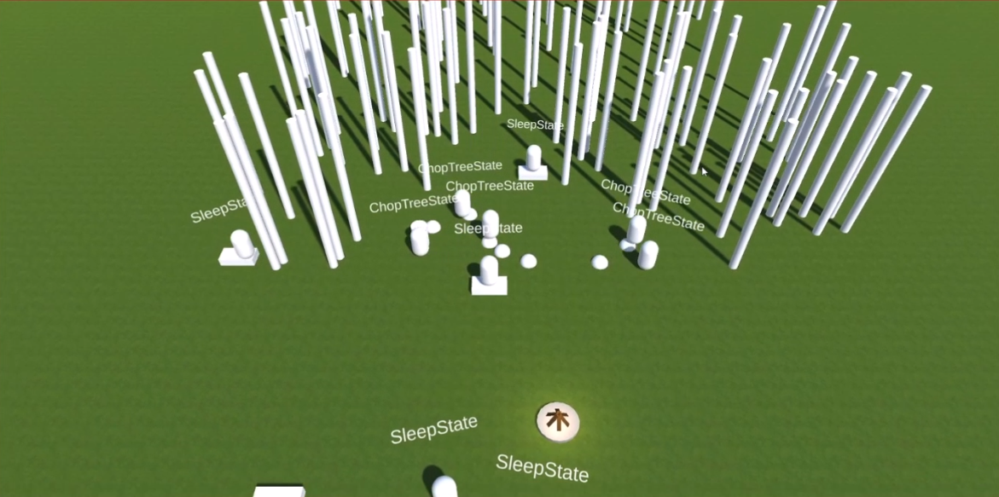
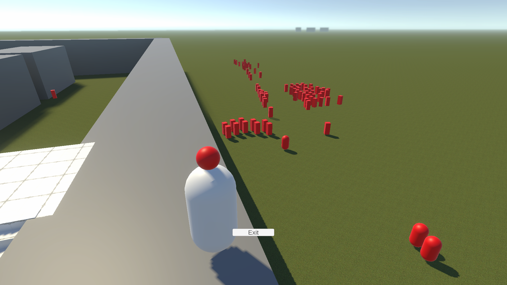
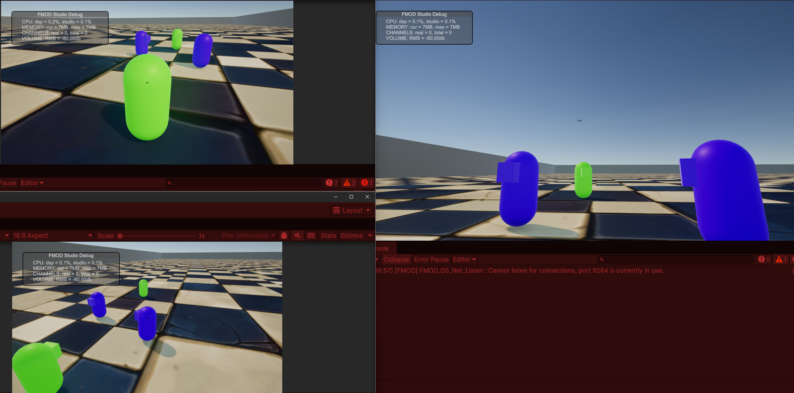

Stone and Struggle
A MASSIVE scale rpg made with Unity ECS and assisted by Claude

Stone and Struggle was made to answer the question "What if the war in an open-world RPG didn't wait for the player?" The answer is a massive, dynamic war operated by "Faction Director" traditional AIs that coordinate resource spending and army movements, while the player marches on the ground as a soldier, an explorer, a monster hunter, or a farmer.
The game has existed in the Unity Game Engine in various forms, finally landing on Unity ECS and Netcode for Entities. As this is my first networked multiplayer game, I've tooled Claude Chat as my assistant. I've given it access to many best-practice project courtesy of Unity, and gave it instructions to respect the project's intentionality. It's been instructed to focus its efforts on educating me of any personal weak points, hunting for bugs and edge cases before they become an issue, and suggesting courses of action when I'm stuck.
Screenshots



